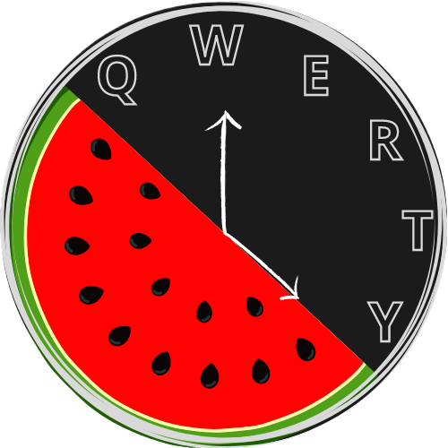

WPM, singkatan dari "words per minute" atau kata per menit, adalah satuan ukuran yang umum digunakan untuk mengukur kecepatan mengetik. Satuan ini menunjukkan jumlah kata yang dapat diproses dalam satu menit.

ngetikcepat.com
langit biru cerah awan putih berarak perlahan mentari bersinar hangat
menyinari bumi hijau hamparan sawah luas terbentang indah dihiasi
pepohonan rindang suara kicau burung terdengar merdu menambah suasana
damai angin sepoi sepoi bertiup lembut menggoyangkan dedaunan sungai
jernih mengalir tenang memantulkan cahaya mentari kehidupan alam begitu
indah menenangkan hati
Time: 00
0 WPM